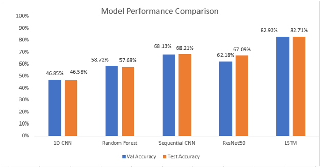
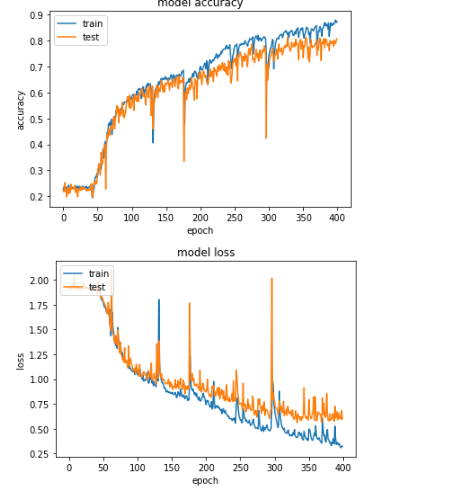

Blog Part 2: Which model to consider while getting emotions form audio data.
This blog aims to investigate and implement Recurrent neural network algorithm
that will analyze an audio data and present emotion associated with this data.
In previous blog, I have covered what are the features to consider for model training.
Here in this post, I am going to explain which model performs well on our data and what model does horribly wrong.
I have started with Convolution Neural Network (CNN) as a baseline model.
The Fast Fourier Transformation (FFT) representation of audio wave is fed into the sequential convolutional neural network (CNN).
As the validation score is low, I couldn’t move forward with this model.
As part of the transfer learning, I have used Resnet50 (Residual Network) model.
You might wonder how would audio data be trained on transfer learning? As transfer learning is only used for image data.
Don’t worry,
I have an answer for this… The generated Mel-spectrogram of the audio signal (which i covered in first part) formed an array, by utilizing this array
I have converted these signals into an Image having a 3-D array of size (224,224,3)
with three channels that is Red, Green, and Blue. In this fashion, all labelled audio data is converted into images
and then passed into Resnet50 model. The observed validation and test accuracy of the model is much higher than baseline model,
however, we still have a room for improvement.
Now, let’s think about another model.

Well… during the process of feature engineering, have you noticed one thing? What could be that one thing?
Wait, I’ll say…..
We could treat the extracted audio feature through librosa as a time series data.
When it comes to the time series data analysis the Recurrent neural network works well.
The Long Short-Term Memory (LSTM) network is a type of Recurrent Neural Network, capable of learning order dependence in sequence prediction problems and
that train on the given output and try to predict result on the unseen data. Unlike traditional neural network,
LSTM keep the previous context of the given input and they try to classify given audio based on understanding of the previous
context so LSTM would come handy in this case.
Now, let’s try if LSTM performs well or not in our data.
The input feature of the model would be Energy – Root Mean Square (RMS), Zero Crossed Rate (ZCR),
and Mel-Frequency Cepstral Coefficients (MFCCs), note that all features have to combined into one to get a single array for each audio file.
After running 400 epochs the train accuracy was 82%, which is pretty well in compared to previous model, so I decided to use this model
as a final model for emotion classification of the audio data.
Click here to view the complete model and it’s summery stat.
The following chart shows the validation and Test accuracy of each model

From this plot we could conclude that LSTM is the best model for our case
The Model accuracy and model loss is shown below
